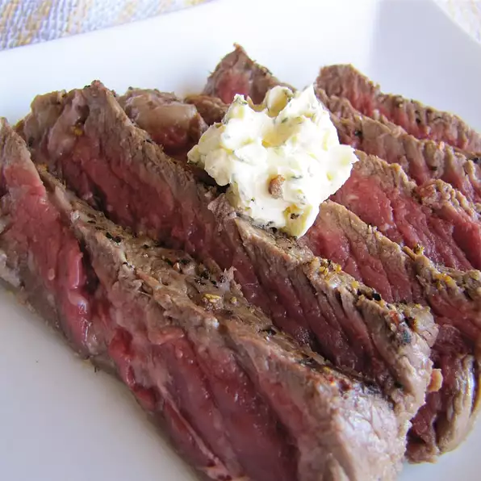

Beer Steak

Description
Now we're really talking. Do you like Steak? Do you like Beer?
How about steak and beer at the same time?
How about beer...on steak??
Well look no further, we're gonna teach you how.
Ingredients
- 4 (1/2 pound) rib-eye steaks, or steak of choice
- 2 tablespoons sea salt
- 2 tablespoons lemon pepper
- 2 (12 fluid ounce) cans or bottles beer of choice
Steps
- Place steaks in a large, shallow container with a lid.
Season each side of steak with salt and lemon pepper.
Gently pour beer over steaks (making sure the seasoning doesn't wash off).
Cover, and refrigerate for 1 to 2 hours.
- Preheat an outdoor grill for high heat and lightly oil the grate.
- Place steaks on preheated grill; discard beer marinade.
Cook for 5 minutes per side, or to desired doneness.